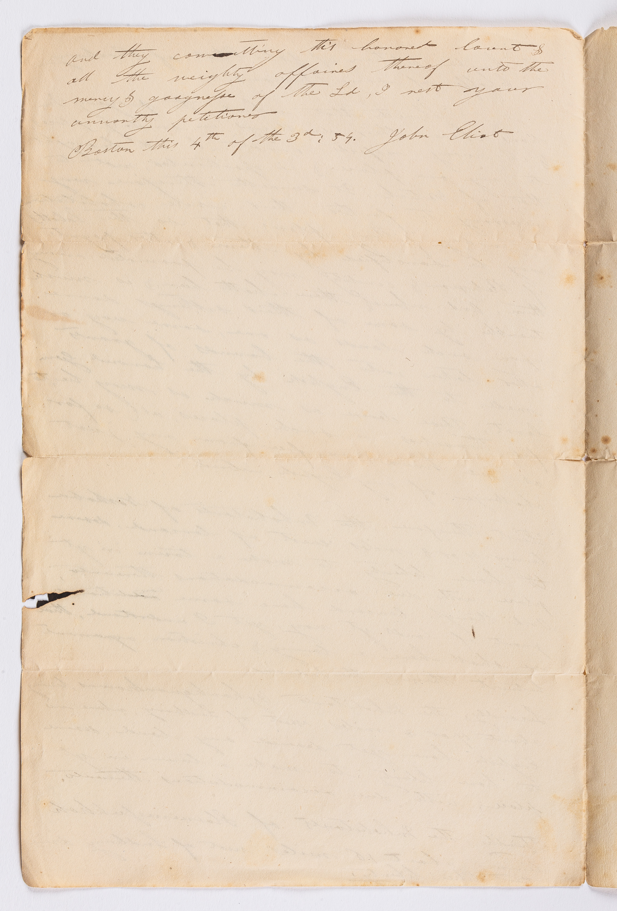

Hassanamesit was established in 1654 with the assistance of John Eliot, and was the third of Eliot's praying towns to be established. It was established on land that was home to an existing Nipmuc village also called Hassanamesit. Hassanamesit is notable as being the hometown of James Printer, an interpreter who worked with John Eliot.
Below is the petition written by John Eliot to the colonial government requesting the establishment of the Hassanamesit praying town

Click on any of the images to enlarge them.
Hassanamesit was one of the praying towns where Indians were confined at the start of the war in August 1675. By October of 1675, the inhabitants were forced to relocate to the Boston Harbor Islands for the remainder of the war.
After the conclusion of the war, Indians did return to the area now known as Hassanamisco. In 1728 the area was sold to settler colonists to establish the town of Grafton, however many Nipmuc families did retain parcels of land after Grafton was established, totaling around 1,200 acres.
Over the next century, many of this land was lost to colonial settlers due to corrupt practices in the area. By 1800 Nipmuc land holdings in the area was down to about 62 acres, and by 1861 the holdings were down to just the three acre property that exists today. Today it is the only piece of Nipmuc land in Massachusetts that has been held continuously by Native Americans.
A homestead was built on the site in 1801, and today is home to the Hassanamisco Indian Museum. The land is also home to yearly powwows and other cultural activities.
Below are photos showing historical markers erected by the Massachusetts Tercentary Comission commemorating both the original Hassanamesit plantation as well as the current Hassanamisco reservation. Photos by Robert Aberg.